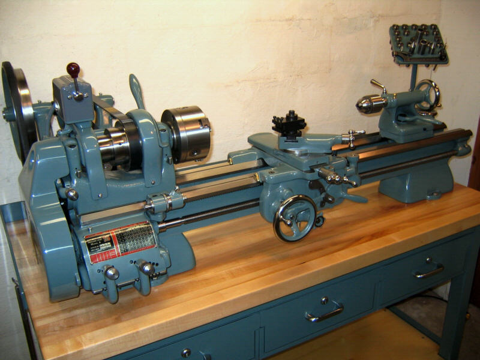
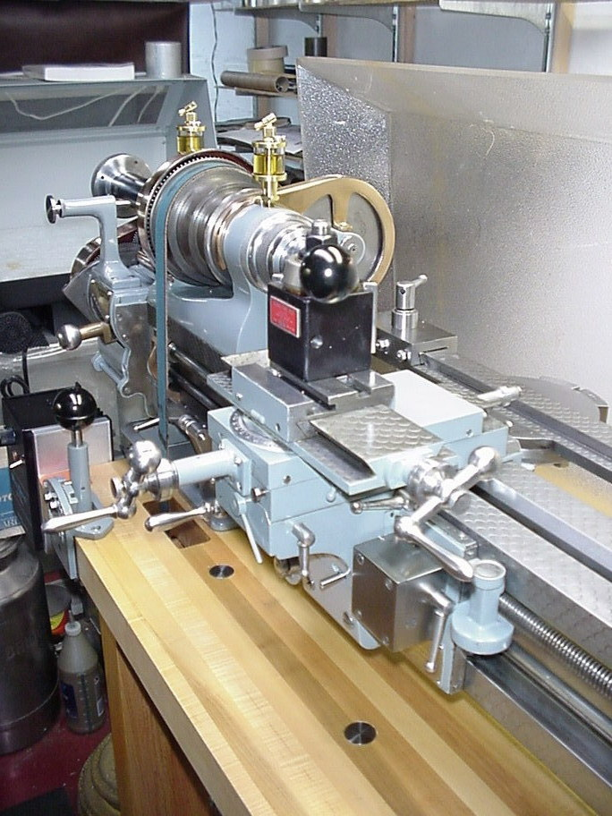

Ye Olde Iron Little Shop of Horrors
Many times one will read on the message boards someone asking what kind of machine they should buy. This is usually an invitation to start the age-old free-for-all argument about whether it would be better to buy a new Asian machine or Ye Olde American Iron. I've expressed my views on this elsewhere, and have bought Asian for the most part, though restoring a nice old machine like a Hardinge or Monarch lathe is on my list to do at some point.
So what is "Ye Olde Iron Little Shop fo Horrors?" It's a sort of blog of anecdotes from folks that went the old iron route and encountered problems. This is not to say that they are unhappy by any stretch of the imagination. Many were tickled to work through the issues and often are even more excited to get to the end result of a "like new" refurbished machine. I keep this blog because I want to remind myself and others of what my be involved with one of these projects, and I may one day need to refer back and get help from these guys on my own restoration project. I'll also post a couple of pictures to let you know what is possible when an Olde Iron restoration goes well:

Southbend Lathe...

Rivett 608 Lathe...
It is important to note that the individuals that are doing this work, while they may not always have had the best of experiences, are having experiences that could happen to anyone. My goal here is very much NOT to suggest there is anything wrong with the steps these guys have taken. As you read the stories, try to learn from them, and imagine yourself in the position of the individuals involved. Before you buy Ye Olde Iron or any used machine tool for that matter, make sure you would be comfortable dealing with these sorts of issues because they are extremely likely to occur. After all, old machines are normally sold for a reason.
I will also collect information on resources useful for those with older machines, not just the horror stories.
How Many Sets of Spindle Bearings Does It Take to Rebuild a Spindle?
This fellow is rebuilding what looks to be a pretty sophisticated spindle as part of a Tree 250 knee mill rebuild. The machine was run until the spindle stopped working altogether. I'm not sure how much use he got out of it before this happened. In addition, he also wanted to increase the operational rpm of the spindle a fair amount. The existing bearings had failed due to contamination, most likely because the original owner used compressed air to blow chips out and some got into the bearings. The original owner appears to have partially disassembled the spindle to have a look at it, and let more contamination into the mating surfaces. It took the new owner at least several months and at least two new sets of bearings to get it fixed. This new owner is a skilled builder of racing engines, so he is knowledgeable about mechanical things, if not necessarily machine tool spindles and angular contact bearings.
His thought was to purchase expensive precision German bearings for the task. Good idea, that will help ensure accuracy and performacne. Unfortunately, there are some important safety tips to be aware of when replacing these kinds of bearings. It turns out they are fairly delicate and you need to make sure you aren't using hammers or presses that can damage the bearings. In this case, at least two sets of new bearings were needed to complete this learning curve.
The first set got manhandled too much, which damaged the bearings. The second set went on much easier, but there are still strange noises being made. As I write this, they remain undiagnosed, but there is much discussion that perhaps the right degree of sliding fit had still not been achieved and the bearings might possibly have been damaged a second time.
While the mill was down awaiting spindle repair, he also discovered the X-axis ballscrew was receiving no lubricant from the oiling system. It remains to be seen what impact that has had. I would venture to say that he is doing the right thing in tearing down the machine to check for such issues and would encourage anyone refurbishing a machine to do likewise. Its easy for the oiling systems to get clogged up, particularly if a machine sits idle for a bit as can happen right before they are sold.
Other key tips from this same machine include:
- Mark the outer race positions in their housing as you remove bearings. It is essential to get them back in the same way. Bearings need to be aligned with one another with respect to their out of roundness in the bore for best results.
- Read all the thread links. Lots of good info on how to inspect bearings for wear and how they should be properly installed.
- HuFlungDung mentions his Haas spindle cartridge overhaul and the oil mist lube it had is very simple. FWIW, when I overhauled my Haas spindle cartridge, which has oil mist, I was expecting some kind of high faluting thingy inside for the oil mist, but it is dead simple. Basically, the air/oil line feeds into a sintered bronze filter above the top bearing.
That is it! No special passages, no nothing, just gravity Air comes out the bottom of the spindle around a close fitting labyrinth end cap. The oil volume required is very low.
More Spindle Woes
A man purchased a Bridgeport VMC 760 from a shop "down the street". He had the opportunity to see the machine powered up before purchase, and everything seemed fine. Once he got the VMC home, it experiences a problem accelerating the spindle to 6000 rpm and faults. They're still trying to diagnose this one as far as I know. Speculation has ranged from needing to reset the spindle parameters in the computer to there being some difference with the power between the two shops.
The scary thing about this is these later model VMC's have a lot of electrical and programmatic issues to diagnose. The difficulties may not be mechanical at all. This means you're either going to have to pay up for a service tech to come deal with it, or try to figure it out yourself. There's a lot less information out there on this kind of thing, but it is still doable for the determined.
Cracked Ballscrew Yoke
One fellow was trying to make an elderly Leadwell VMC work that he had taken home. It was a machine he was familiar with that had been in production at the shop where he worked before retiring. The thing was supposed to be in good shape, but it had a mysterious 0.003" of backlash in it, which was unacceptable. On the way to diagnosing his problem, he replaced the ballscrew, the bearings holding the ballscrew, a servo with encoder, cables, re-adjusted the gibs, and spent a lot of time trying to track it down. Turned out to be a crack in the yoke that he believes got there because the riggers lifted the machine improperly. The crack only flexed open when things got going pretty good so the problem was intermittent to track down.
Graziano SAG 14 Ways Worn Out By Hydraulic Tracer
Graziano lathes are a nice step up from most Asian lathes. They're made in Brazil, but are supposed to be very good quality. They certainly are fairly expensive on eBay. This fellow's lathe had a hydraulic tracer attachment that was apparently used for production of some small part. This constant repetitive motion wore about 8" of the ways down 0.005". Fixing this problem required a complete teardown of the lathe, regrining of the ways, grinding and scraping Turcite on the carriage. The complete job cost $3500, which is darned near what I see these lathes selling for on eBay sometimes. You certainly could obtain a new Asian 14x40 lathe for this price. His machine cost him $2800 shipped, and a total of $8950 fully tooled with DRO after this work was done.
Not cheap, but once done, the machine was dialed in perfectly: a 2" test bar 12" long with 3 collars without center support turns to absolute parallel no deviation with a 10th.
Rescraping a Bridgeport BOSS
A 1980 Bridgeport BOSS was refitted with new servos and controls, but it was found to be binding at the limits of travel. This binding wore out the ballscrews, so they'll have to be rebuilt as well. A rescraping job for this machine was quoted at $1600 with the same amount needed to rechrome the ways. The owner also completely rebuilt the head of the machine. Without redoing the chrome or rescraping, the owner will have $6500 invested in the machine, which originally cost him $800 on eBay. It has 0.011" of backlash on the Y-axis with snug gibs. The tabletop is also warped by 0.005" or more. After disassembling the table again, the owner found the angular contact bearings for the ballscrews needed replacement.
Common Problem Areas for Tree Mills
Trees are my favorite CNC knee mills, and I'd love to play with one someday. Meanwhile, here is a list I found of common problems with Tree mills:
1, the teeth for tilting the head are inadequit ....always help support the wieght & avoid jerking while tilting ...once they break thats it you'll have to hand-bar the weight forevermore past the broaken teeth!
2' the smaller tree 3/4 collet capacity has a spindle that can be bent (run-away table-feed)
or tangle in a climb cut !!!
I have strieghtened a few and re-cut the receiver taper on a few more , that were out less than .004 t.i.r. & unwilling to pay to fix it right !!!
the bigger tree 1in. collet capacity , I've never seen a bent spindle yet ....just the same on trees it is even more important to minumize your quill hang-out when roughing....and not side-slam the spindle ! or have a part slip in a climb-cut.
3 ,On tree power-feeds They are Powerfull ,get in the habit of removing your vice handle ALWAYS. Yyou run that into the knee , it can be awfull!
make sure your max-end-stops are intact , so-as to not jam the screw-travel (DAMAGE POTENCIAL $$$)
4 , some folks don't realise the square crank-pin on the left of the collumn (lower)is your brake/lock for the turret positioning...if left snug only ....quite a bit of OPPS can occur in a cut .........
5, more than one machinist has had the web from thumb to forefinger eaten while messing with the snap collar horse-shoe , cleaning etc.
if the inside of the horse-shoe is baddly worn , a good tool-welder can Tig the edges sharp again and re-work the square corners to fit again !
use filler that leaves high 40s RC.